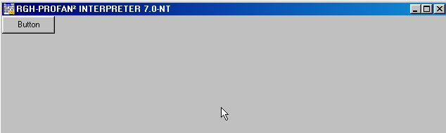

SelfProfan²:Tips Tricks
Tips und Tricks
Hier finden sich allerlei Tips und Tricks zu Profan².Wer seine eigenen Tips
veröffentlichen will,kann mir schreiben.
Fehlender Windows-Look?
Deine Anwendung hat zwar ein Fenster,aber es sieht nicht aus wie eine typische
Windows-anwendung?Mit diesem Quelltext wird abhilfe geschafft:
Def GetSysColor(1) !"USER32","GetSysColor"
WindowStyle $003F ' Fensterstil: Hintergrund=Transparent
Window 0,0-640,480 ' Fenster unter 0,0-640,480
SetTrueColor 1 ' Farbe auf 16 Millionen setzen
Cls GetSysColor(15) ' Perfekte Hintergrundfarbe
UseFont "MS Sans Serif",15,0,0,0,0 ' Schriftart "MS Sans Serif" verwenden
' Sie ist die Standart-Schriftart bei Window-Anwendungen
SetDialogFont 1 ' Diese Schrift nun auf das Fenster und die Dialoge
'übertragen
' Dies hier ist nur ein Beispiel,der erforderliche Quelltext ist oben /\
' beschrieben:
Declare 1&
1&=CreateButton(%hwnd,"Button",0,0,75,25)

Name:Das Copyright(C) aus der Runtime von Profan² entfernen
Dies geschieht auf eigene Verantwortung.Die Runtime kann davon Schäden nehmen
und dann muss sie neu installiert werden.Weiterhin ist nicht sicher,ob das legal ist.
Ich übernehme keine Verantwortung!
Benötigt: Resource Hacker
Starte den Resource Hacker und öffne die Runtime "Prfrun32.exe"(sie heißt auch
profrun.exe oder anders).Öffne nun (links) den Ordner "Menü". Nun wird ein
weiterer Ordner mit dem Namen "LEER" erscheinen. Klappe ihn auf und du siehst ein
Zahnrad, sowie eine "0" dahinter. Klicke auf die 0 und du siehst rechts ein Textfeld.
Entferne den kompletten Text und klicke auf "Abspeichern". Nun wählst du das Menü
"Datei"-"Speichern unter".Du wählst die selbe Datei aus, die du auch geöffnet hast,
also Prfrun32.exe(oder Profrun.exe). Nun hast du kein Menü mehr in deiner Runtime.